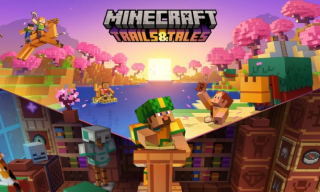

Обновление 1.20: Встречайте новые биомы и мобы, которые изменят вашу игру!
15.09.2024В обновлении Майнкрафт 1.20 добавлены увлекательные новые биомы и мобы, которые существенно разнообразят игровой процесс. Среди новых биомов можно найти Лес Пустоши, богатый редкими ресурсами, и Криогенный Тайник, где живут удивительные существа. Новые мобы включают снежного Крипера, агрессивного моба, который замораживает окружающую среду, и Теневого Жителя, который появляется в темных местах. Это обновление обещает сделать игру ещё более увлекательной и насыщенной, добавив новые элементы для исследования и творчества.
 Источник: Minecraft.net